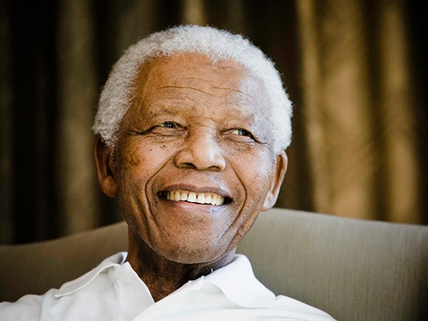
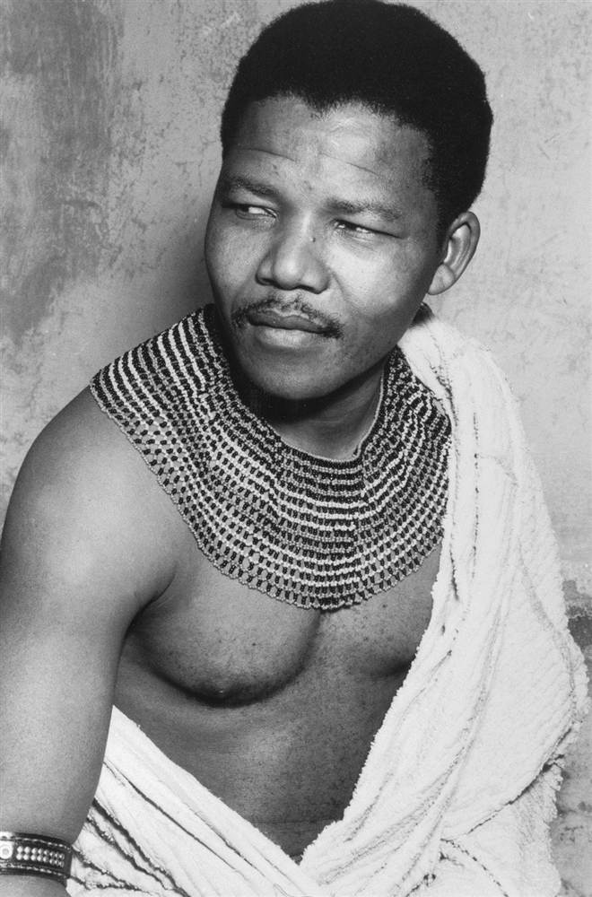
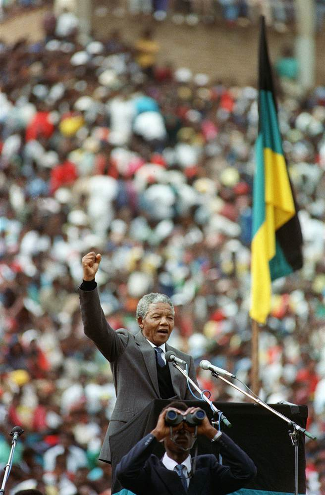

RSS
RSS
RSS
RSS
|



By Tracy Connor, Staff Writer, NBC News
Nelson Mandela, the revered South African anti-apartheid icon who spent 27 years in prison, led his country to democracy and became its first black president, died Thursday at home. He was 95. "He is now resting," said South African President Jacob Zuma. "He is now at peace." "Our nation has lost its greatest son," he continued. "Our people have lost a father." A state funeral will be held, and Zuma called for mourners to conduct themselves with "the dignity and respect" that Mandela personified. "Wherever we are in the country, wherever we are in the world ... let us reaffirm his vision of a society in which none is exploited, oppressed or dispossessed by another," he said as tributes began pouring in from across the world. |
President Obama said his first political action was an anti-apartheid protest inspired by Mandela, who "achieved more than could be expected of any man."
"I cannot fully imagine my own life without the example Nelson Mandela set," he said.
Obama called Zuma on Thursday evening to express his heartfelt condolences, according to the White House.
Though he was in power for only five years, Mandela was a figure of enormous moral influence the world over - a symbol of revolution, resistance and triumph over racial segregation. He inspired a generation of activists, left celebrities and world leaders star-struck, won the Nobel Peace Prize and raised millions for humanitarian causes. South Africa is still bedeviled by challenges, from class inequality to political corruption to AIDS. And with Mandela's death, it has lost a beacon of optimism. In his jailhouse memoirs, Mandela wrote that even after spending so many years in a Spartan cell on Robben Island - with one visitor a year and one letter every six months - he still had faith in human nature. |
"No one is born hating another person because of the color of his skin, or his background, or his religion," he wrote in "Long Walk to Freedom." "People must learn to hate, and if they can learn to hate, they can be taught to love, for love comes more naturally to the human heart than its opposite."" |